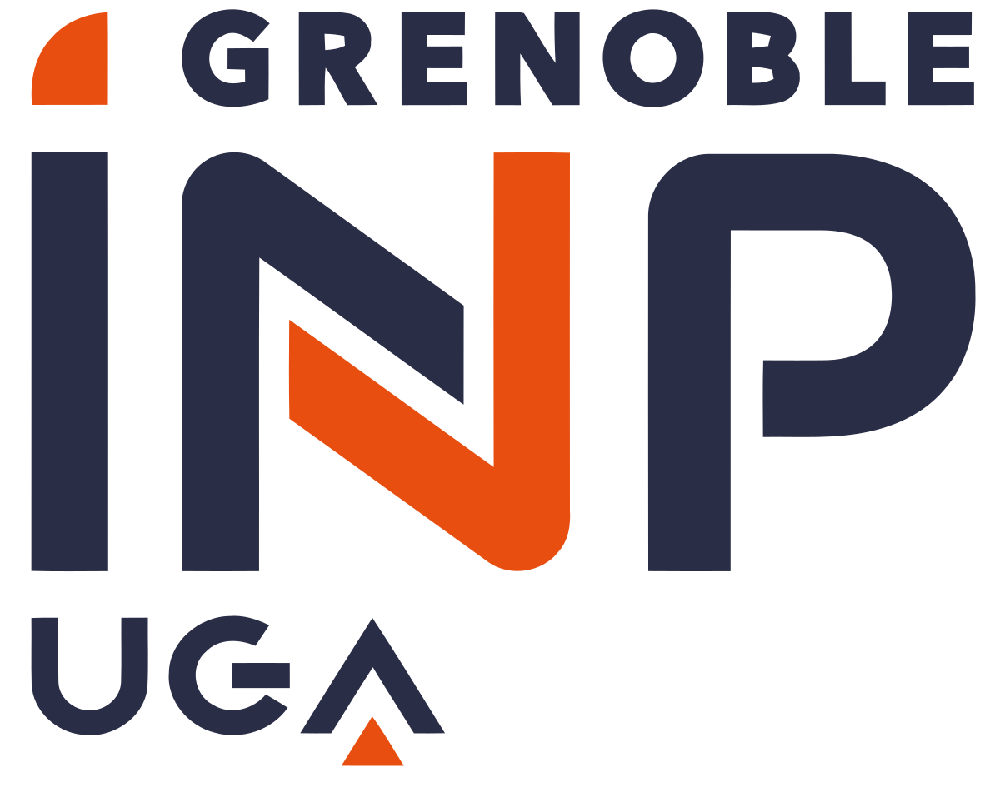
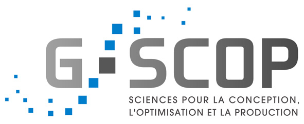
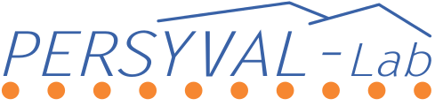
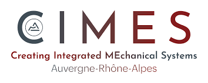

G-SCOP – UGA/CNRS research lab has teamed up with SKYDEA to launch the MIMESIS joint research lab for advancing human-centered computing in model-based systems engineering. The 5-year research lab founded by the French National Research Agency provides a framework for exploratory joint research activities to understand how humans represent and interact with different types of design information, and to develop rich human-computer 3D visual interactions for supporting collaborative digitally-mediated design situations, with an emphasis on engineered systems architecting. If you want to keep informed or contribute to the maturation of our demonstrators, join our LinkedIn community

- 14/11/2023 - INCOSE French Chapter Workshop on Virtual Reality for Model-Based Systems Engineering
- 13/10/2023 - ANR Joint Research MIMESIS'Lab official kick off
V. Romero (2022) Un environnement virtuel immersif, interactif et collaboratif pour les revues de conception basées sur les modèles. Doctoral dissertation, Université Grenoble Alpes https://theses.hal.science/tel-04048678
V. Romero, R. Pinquié, F Noël. (2022) An open benchmark exercise for model-based design reviews. In: Noël, F., Nyffenegger, F., Rivest, L., Bouras, A. (eds) Product Lifecycle Management. PLM in Transition Times: The Place of Humans and Transformative Technologies. PLM 2022. IFIP Advances in Information and Communication Technology, vol 667. Springer, Cham. DOI: https://doi.org/10.1007/978-3-031-25182-5_18
V. Romero, R. Pinquié, F. Noël. (2022) A user-centric computer-aided verification process in a virtuality-reality continuum. In Computers in Industry, Vol. 140, 2022. DOI: https://doi.org/10.1016/j.compind.2022.103678
R. Pinquié, V. Romero, F. Noël. (2022) Survey of model-based design review: practices and challenges. 17th International Design Conference, Cavtat, Croatia, May 23-26, 2022. DOI: https://doi.org/10.1017/pds.2022.197
V. Romero, R. Pinquié, F. Noël. (2021) An immersive virtual environment for reviewing model-centric designs. 23rd International Conference on Engineering Design (ICED), Gothenburg, Sweden, August 16-20, 2021. DOI: https://doi.org/10.1017/pds.2021.45
R. Pinquié, H. Wang, F. Noël (2023) Human-centric co-design of model-based system architecture. 33rd CIRP Design Conference, Sydney, Australia, May 17-19, 2023. In Procedia CIRP. Vol. 109, pp. 472-477, 2023. DOI: https://doi.org/10.1016/j.procir.2023.02.131
T.T.H Tranh, G. Foucault, R. Pinquié. (2022) Benchmarking of 3D modelling in virtual reality. In Computer-Aided Design and Applications (CADA), Vol. 19, No. 6, pp. 1184-1190, 2022. DOI: https://doi.org/10.14733/cadaps.2022.1184-1190
- Romain Pinquié - Scientific Coordinator & Associate Professor - Univ Grenoble Alpes, CNRS, Grenoble INP, G-SCOP - contact: romain.pinquie@grenoble-inp.fr
- Frédéric Noel - Vision-R technological XR research platform & Full Professor - Univ Grenoble Alpes, CNRS, Grenoble INP, G-SCOP
- Gilles Foucault - Associate Professor - Univ Grenoble Alpes, CNRS, G-SCOP
- Camilo Medina - PhD Candidate - Univ Grenoble Alpes, CNRS, Grenoble INP, G-SCOP
- Haobo Wang - Post-doctoral research fellow - Univ Grenoble Alpes, CNRS, Grenoble INP, G-SCOP
- To be hired - Post-doctoral research fellow - Univ Grenoble Alpes, CNRS, Grenoble INP, G-SCOP
- To be hired - Research engineer - Univ Grenoble Alpes, CNRS, Grenoble INP, G-SCOP
- Romain Pinquié - Scientific Coordinator & Associate Professor - Univ Grenoble Alpes, CNRS, Grenoble INP, G-SCOP
- Frédéric Noel - Vision-R technological XR research platform & Full Professor - Univ Grenoble Alpes, CNRS, Grenoble INP, G-SCOP
- Hugo Falgarone - CEO Skydea
- Benjamin Ray - CTO Skydea
- Members of the executive committee
- Peggy Zwolinski - Head of G-SCOP UMR CNRS Research Lab - Univ Grenoble Alpes, CNRS, Grenoble INP, G-SCOP
- Valérie Perrier - Vice President of the Scientific Board of Univ Grenoble Alpes - Univ Grenoble Alpes, Grenoble INP
- Ahmed Lbath - Head of the Carnot research institute on software and intelligent systems - Univ Grenoble Alpes, CNRS, Grenoble INP
- Members of the executive committee
- Francois Bouissière - Aircraft Architect - Airbus Group
- Nicolas Chevassus - Head of Ariane 6 Digital Transformation, Ariane Group
- Frédéric Mérienne - Full Professor, expert in virtual reality - Arts et Métiers ParisTech
- Françoise Darses - Full Professor, expert in cognitive ergonomics - Institute for Biomedical Research of Defense
This work is supported by the French National Research Agency with the grant ANR-23-LCV1-0002 (MIMESIS project) and by the Institut Carnot LSI.
The documents contained in these directories are included by the contributing authors as a means to ensure timely dissemination of scholarly and technical work on a non-commercial basis. Copyright and all rights therein are maintained by the authors or by other copyright holders, notwithstanding that they have offered their works here electronically. It is understood that all persons copying this information will adhere to the terms and constraints invoked by each author's copyright.
|
 |  |  |  |